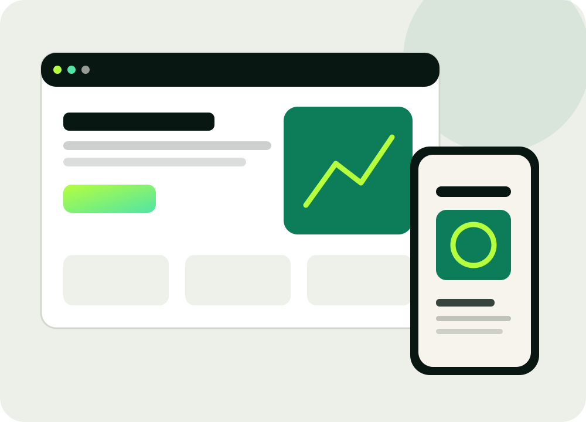

Software, die zum Arbeitsablauf passt.
Individuelle Web-Apps, Dashboards und Automatisierungen für Prozesse, die sich nicht sinnvoll in starre Standardsoftware pressen lassen.

Bausteine für Ihre Software.
Web-App & PWA
Browserbasierte Anwendungen mit responsiver Bedienung für Desktop, Smartphone und Tablet.
Dashboards
Status, Daten, Planung, Filter, Aktionen und Auswertung in einer übersichtlichen Oberfläche.
Datenmodelle & Benutzer
Datenstrukturen, Rollen, Rechte, Anmeldung und sichere Prozesslogik.
Schnittstellen
Systeme und Datenquellen verbinden sowie Import-/Exportprozesse umsetzen.
Workflow-Automation
Wiederkehrende Aufgaben, Benachrichtigungen, Datentransfers und Prozessschritte automatisieren.
KI-Prototyping
KI-gestützte Funktionen dort einsetzen, wo sie einen konkreten Prozessnutzen liefern.
Vom Bestand bis zur Planung.
Die Anwendungen werden rund um den tatsächlichen Arbeitsablauf aufgebaut – statt den Prozess an ein Tool anzupassen.
- Bestands- und Lagerverwaltung mit Scan-Prozessen
- Projekt- und Terminplanung mit Abhängigkeiten
- Kamera-/Grundriss-Planung und Materialkalkulation
- Mess- und Sensordaten erfassen und visualisieren
- CSV/Excel-Daten einlesen, prüfen und weiterverarbeiten
- Automatische E-Mail-, Kalender- oder Statusabläufe

Erst nutzbar, dann größer.
Wir beginnen mit einem klar abgegrenzten Funktionsumfang. Ein früher Prototyp reduziert Missverständnisse, schafft Feedback und verhindert unnötige Entwicklung.
Prozess
Problem, Nutzer und Daten verstehen.
MVP
Kernfunktionen schnell nutzbar machen.
Test
Im echten Ablauf prüfen und verbessern.
Ausbau
Funktionen modular erweitern.
Welcher Prozess kostet heute unnötig Zeit?
Schicken Sie uns den Ablauf, den Sie vereinfachen möchten – gern auch als Skizze, Screenshot oder bestehende Excel-Datei.